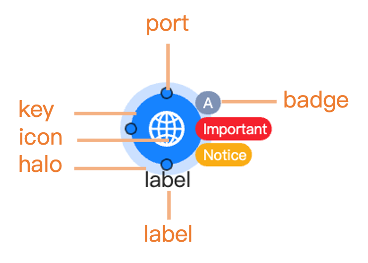

Introduction
Nodes belong to the graph data. In g6R, nodes can be created from a dataframe or a list such as:
nodes <- data.frame(id = 1:2)
# or
nodes <- list(
list(id = 1),
list(id = 2)
)While dataframes might be more convenient for simple cases, lists provides more flexibility for advanced customization since some node properties have to be nested lists, for instance style properties:
In g6R, the preferred way to create nodes is by using
the helper functions g6_node() and g6_nodes().
These functions provide a consistent and user-friendly interface for
node creation, supporting both simple and advanced customization.
g6_node() allows you to define a single node with specific
properties, while g6_nodes() and as_g6_nodes()
can generate multiple nodes from various input format (data.frame,
list):
as.list(methods("as_g6_node"))
#> [[1]]
#> [1] "as_g6_node.g6_node"
#>
#> [[2]]
#> [1] "as_g6_node.list"
as.list(methods("as_g6_nodes"))
#> [[1]]
#> [1] "as_g6_nodes.data.frame"
#>
#> [[2]]
#> [1] "as_g6_nodes.g6_nodes"
#>
#> [[3]]
#> [1] "as_g6_nodes.list"Using these helpers ensures compatibility with all g6R features and is the recommended method for node creation.
For example:
# Create a single node
node <- g6_node(id = "A", type = "circle", style = list(fill = "#FFB6C1"))
# Create multiple nodes from a data frame
df <- data.frame(id = c("A", "B"), type = c("circle", "rect"))
nodes <- as_g6_nodes(df)
# With g6_nodes()
nodes <- g6_nodes(
g6_node(id = "A", type = "circle"),
g6_node(id = "B", type = "rect")
)
# with a list
lst <- list(
list(id = "A", type = "circle"),
list(id = "B", type = "rect")
)
nodes <- as_g6_nodes(lst)
nodes
#> [[1]]
#> $id
#> [1] "A"
#>
#> $type
#> [1] "circle"
#>
#> attr(,"class")
#> [1] "g6_node" "g6_element"
#>
#> [[2]]
#> $id
#> [1] "B"
#>
#> $type
#> [1] "rect"
#>
#> attr(,"class")
#> [1] "g6_node" "g6_element"
#>
#> attr(,"class")
#> [1] "g6_nodes"Data properties
g6R nodes are allowed to have the following properties:
-
id: a unique identifier for the node, required. -
type: the type of the node. -
data: custom data for the node that can be retrieved. -
style: style properties. A comprehensive list is available here. -
states: initial states. An unnamed list of valid states. -
combo: id of the combo the node belongs to. Combo are describes in another vignette (TBD link). -
children: nodes ids for tree. -
ports: ports definition for the node (since g6R 0.6.0). See the Ports section for more details.
Node type
Builtin types are circle, rect,
ellipse, diamond, triangle,
hexagon, star, donut:
types <- c(
"circle",
"rect",
"ellipse",
"diamond",
"triangle",
"hexagon",
"star"
)
nodes <- lapply(seq_along(types), \(i) {
list(id = types[[i]], type = types[[i]])
})
g6(nodes) |>
g6_layout(d3_force_layout()) |>
g6_options(
animation = FALSE,
node = list(
style = list(
labelText = JS(
"(d) => {
return d.id
}"
)
)
)
)Special types
Images
You can create nodes with images by setting the type to
image and providing a src property in the
style. The image will be displayed as the node content:
nodes <- list(
list(
id = 1,
type = "image",
style = list(
src = "https://gw.alipayobjects.com/mdn/rms_6ae20b/afts/img/A*N4ZMS7gHsUIAAAAAAAAAAABkARQnAQ"
)
)
)
g6(nodes, height = "100px") |>
g6_layout(d3_force_layout()) |>
g6_options(
animation = FALSE,
node = list(
style = list(
labelText = JS(
"(d) => {
return d.id
}"
)
)
)
)HTML nodes
There exists a last type which allows to create nodes with custom
html. Importantly, you can’t have html nodes with other type of nodes.
The type applies at the global node option level as shown in the
following. The node structure is created with the innerHTML
property which has to be a JavaScript callback taking node data as
parameter:
nodes <- data.frame(id = 1:3)
g6(nodes, height = "200px") |>
g6_layout(d3_force_layout()) |>
g6_options(
animation = FALSE,
node = list(
type = "html",
style = list(
innerHTML = JS(
"(d) => {
return `
<div class=\"card\" style=\"width: 13rem;\">
<div class=\"card-body\">
This is node: ${d.id}
</div>
</div>`;
}"
)
)
)
)Donut
You can create donut nodes by setting the type to
donut. The style property should contain a
JavaScript function that returns an array of objects, each with a
value, color and other possible properties
described here,
if you want to customize the segments of the donut. You may give an
data.index property to the node to distinguish between
different donuts and customize the output, as shown in the example
below.
nodes <- list(
list(
id = 1,
data = list(index = 0)
),
list(
id = 2,
data = list(index = 1)
)
)
g6(nodes, height = "200px") |>
g6_layout(d3_force_layout()) |>
g6_options(
animation = FALSE,
node = list(
type = "donut",
style = list(
donuts = JS(
"(item) => {
const { index } = item.data;
if (index === 0) {
return [
{ value: 50, color: 'red' },
{ value: 150, color: 'green' },
{ value: 100, color: 'blue' },
];
}
if (index === 1) {
return [
{ value: 100, color: 'yellow' },
{ value: 50, color: 'purple' },
{ value: 150, color: 'orange' },
];
}
}"
)
)
)
)Styling nodes
The g6 JavaScript library exposes a wide range of style
properties for nodes, which can be set in the style
property of the node data. We list below the most outstanding
properties, but you can find a comprehensive list in the documentation.

Main graphic properties
These properties are used to define the main graphic style of the node, such as color, width, and line type. They can be applied at the global node option level or at the individual node level. Here is an example of how to set the color for all nodes of the same graph:
nodes <- data.frame(id = 1:2)
g6(nodes, height = "200px") |>
g6_layout(d3_force_layout()) |>
g6_options(
node = list(
style = list(
fill = "#FFB6C1", # Node fill color
fillOpacity = 0.5, # Node fill opacity
stroke = "#000", # Node border color
lineWidth = 2, # Node border width
radius = 10 # Node corner radius
)
)
)Label styling
Some common properties include label styling:
nodes <- list(
list(
id = 1,
style = list(
label = TRUE, # Whether to display the node label
labelText = "Node Name", # Label text content
labelFill = "#000", # Label text color
labelFontSize = 15, # Label font size
labelFontWeight = "normal", # Label font weight
labelPlacement = "bottom" # Label position relative to the main graphic of the node
)
)
)
g6(nodes, height = "200px") |>
g6_layout(d3_force_layout())Badges
You can add badges
to nodes using the badge property in the style
list. Badges are small indicators that can display additional
information, such as counts or statuses:
nodes <- list(
list(
id = 1,
style = list(
badge = TRUE, # Whether to display the badge
badges = list(
list(text = "A", placement = "right-top"),
list(text = "Important", placement = "right"),
list(text = "Notice", placement = "right-bottom")
),
badgePalette = c("#7E92B5", "#F4664A", "#FFBE3A"), # Badge background color palette
badgeFontSize = 7 # Badge font size
)
)
)
g6(nodes, height = "200px") |>
g6_layout(d3_force_layout())Ports
Ports
are special points on nodes that can be used for connecting edges. They
can be defined in the style property of the node data. You
can specify the position and other properties of each port:
nodes <- list(
list(
id = 1,
style = list(
port = TRUE,
ports = list(
list(
key = "bottom",
placement = c(0.5, 1),
fill = "#7E92B5"
),
list(
key = "right",
placement = c(1, 0.5),
fill = "#F4664A"
),
list(
key = "top",
placement = c(0.5, 0),
fill = "#FFBE3A"
),
list(
key = "left",
placement = c(0, 0.5),
fill = "#D580FF"
)
),
portR = 3,
portLineWidth = 1,
portStroke = "#fff"
)
)
)
g6(nodes, height = "200px") |>
g6_layout(d3_force_layout())Since, g6R 0.6.0, we offer a better support for ports.
To enable it, you must pass a custom type to g6_node() such
as custom-circle-node, custom-rect-node (We
support 9 shapes,
except HTML which does not handle port in the g6 library).
g6_node() get a new ports argument to define
ports for each node. In the g6 JS library, ports are normally defined
inside style but we consider they are too important to be
hidden there. Now you can define ports directly in the node data, g6R
automatically moves them to style.ports when rendering the
graph. We expose a new g6_port() function to create ports
easily and wrap them inside g6_ports(). A port has a unique
key, an arity that is the number of
connections it can make or take and other style parameters inherited
from g6.
When giving a key to a port, don’t worry if key names collide between
nodes, g6R automatically makes them unique by prefixing them with the
node ID on the JS side.
- 2 kind of ports have been designed:
-
input ports (
g6_input_port()): they can only be the target of an edge. -
output ports (
g6_output_port()): they can only be the source of an edge.
-
input ports (
When creating edges, if you provide sourcePort and/or
targetPort within the style list, the edge
will be connected to the corresponding ports. Validation is made so we
don’t connect incompatible ports (e.g. connecting an output port to
another output port) or connecting a port to itself. Finally
create_edge() behavior was improved to work better with
ports. For instance, you can’t drag from a port that is already at its
arity limit. You can’t drag from a node if it has ports (drag from the
ports instead). For instance, you can also do:
g6(
nodes = g6_nodes(
g6_node(
id = 1,
type = "custom-circle-node",
style = list(
labelText = "Node 1"
),
ports = g6_ports(
g6_input_port(
key = "input-1",
placement = "left"
),
g6_output_port(
key = "output-1",
placement = "right"
),
g6_input_port(
key = "input-12",
placement = "top"
)
)
),
g6_node(
id = 2,
type = "custom-circle-node",
style = list(
labelText = "Node 2"
),
ports = g6_ports(
g6_input_port(
key = "input-2",
placement = "left"
),
g6_output_port(
key = "output-2",
placement = "right"
)
)
)
),
edges = g6_edges(
g6_edge(
source = 1,
target = 2,
style = list(
sourcePort = "output-1",
targetPort = "input-2",
endArrow = TRUE
)
)
)
) |>
g6_layout() |>
g6_options(
animation = FALSE,
edge = list(style = list(endArrow = TRUE))
) |>
g6_behaviors(
click_select(),
drag_element(
enable = JS(
"(e) => {
return !e.shiftKey && !e.altKey;
}"
)
),
drag_canvas(
enable = JS(
"(e) => {
return e.targetType === 'canvas' && !e.shiftKey && !e.altKey;
}"
)
),
zoom_canvas(),
create_edge(
enable = JS(
"(e) => {
return e.shiftKey}"
)
)
) |>
# Allow to dynamically remove an edge
g6_plugins(
context_menu(
enable = JS("(e) => e.targetType === 'edge'"),
getItems = JS(
"() => {
return [
{ name: 'Remove edge', value: 'remove_edge' }
];
}"
),
onClick = JS(
"(value, target, current) => {
const graph = HTMLWidgets
.find(`#${target.closest('.g6').id}`)
.getWidget();
console.log(current.id);
if (current.id === undefined) return;
if (value === 'remove_edge') {
graph.removeEdgeData([current.id]);
graph.draw();
}
}
"
)
)
)Collapsible nodes
We added new collapse parameter to nodes, which will
work if you use any of the custom-*-node node types. If a
node has children, a vector or list of node IDs, it can be
collapsed or uncollapsed. collapse accepts a list of
options via g6_collapse_options(). When a node has
children set, an option g6R.directed_graph is
set to TRUE so that, when a connection is created between 2
nodes, we automatically establish parent/child relation and inversely
when an edge or node is removed. You can also manually opt-in for this
setup by setting options(g6R.directed_graph = TRUE).
Importantly, the parent/child relations are only maintained if you use
the g6R proxy functions. Using the direct JS G6 API yourself (like with
graph.removeEdgeData(...) won’t do anything to keep the
tree state in sync, which will lead to incorrect UI experience!
Therefore, when you create a context_menu() (or any plugin
like the toolbar()) to remove edges or nodes, you have to
use the proxy functions as shown in the Shiny example below.
library(shiny)
library(g6R)
options(
"g6R.mode" = "dev",
# In theory this is automatically set whenever a g6_node has some children ...
"g6R.directed_graph" = TRUE
)
ui <- fluidPage(
g6_output("dag"),
verbatimTextOutput("clicked_port"),
verbatimTextOutput("removed_node")
)
server <- function(input, output, session) {
output$dag <- render_g6(
g6(
nodes = g6_nodes(
g6_node(
id = 1,
type = "custom-rect-node",
style = list(
src = "https://gw.alipayobjects.com/mdn/rms_6ae20b/afts/img/A*N4ZMS7gHsUIAAAAAAAAAAABkARQnAQ",
labelText = "Node 1"
),
ports = g6_ports(
g6_input_port(
key = "input-1",
placement = "top",
label = "port 1 (visible)"
# visibility = "visible" is default
),
g6_output_port(
key = "output-1",
placement = "bottom",
label = "port 2 (hover)"
),
g6_input_port(
key = "input-12",
placement = "top",
label = "port 3 (hidden)",
visibility = "hidden"
)
),
children = c(2),
collapse = g6_collapse_options(collapsed = TRUE)
),
g6_node(
id = 2,
type = "custom-circle-node",
style = list(
labelText = "Node 2"
),
ports = g6_ports(
g6_input_port(
key = "input-2",
placement = "left"
),
g6_output_port(
key = "output-2",
placement = "top",
arity = Inf
)
)
)
),
edges = g6_edges(
g6_edge(
source = 1,
target = 2,
style = list(
sourcePort = "output-1",
targetPort = "input-2",
endArrow = TRUE,
startArrow = FALSE,
endArrowType = "vee"
)
)
)
) |>
g6_layout() |>
g6_options(
animation = FALSE,
node = list(
style = list(
#fill = "#CED4D9",
#fillOpacity = 0
)
),
renderer = JS("() => new SVGRenderer()"),
edge = list(style = list(endArrow = TRUE))
) |>
g6_behaviors(
click_select(multiple = TRUE),
drag_element(),
drag_canvas(
enable = JS(
"(e) => {
return e.targetType === 'canvas' && !e.shiftKey && !e.altKey;
}"
)
),
zoom_canvas(),
create_edge(enable = TRUE)
) |>
# Allow to dynamically remove an edge or node
g6_plugins(
context_menu(
enable = JS("(e) => true"),
getItems = JS(
"(e) => {
if (e.targetType === 'edge') {
return [{ name: 'Remove edge', value: 'remove_edge' }];
} else if (e.targetType === 'node') {
return [{ name: 'Remove node', value: 'remove_node' }];
}
return [];
}"
),
onClick = JS(
"(value, target, current) => {
const graph = HTMLWidgets
.find(`#${target.closest('.g6').id}`)
.getWidget();
if (current.id === undefined) return;
if (value === 'remove_edge') {
console.log(target);
Shiny.setInputValue(target.closest('.g6').id + '-removed_edge',
{id: current.id},
{priority: 'event'});
} else if (value === 'remove_node') {
// Send node ID to Shiny before removing
Shiny.setInputValue(target.closest('.g6').id + '-removed_node',
{id: current.id},
{priority: 'event'});
}
}
"
)
)
)
)
output$clicked_port <- renderPrint({
input[["dag-selected_port"]]
})
output$removed_node <- renderPrint({
input[["dag-removed_node"]]
})
proxy <- g6_proxy("dag")
# Add a new node when a port is clicked from the guide
# at the mouse position (close to the guide)
observeEvent(input[["dag-selected_port"]], {
new_id <- as.character(round(as.numeric(Sys.time())))
pos <- input[["dag-mouse_position"]]
parent_id <- as.character(input[["dag-selected_port"]][["node"]])
proxy |>
g6_add_nodes(
g6_node(
id = new_id,
type = "custom-circle-node",
style = list(
x = pos$x + 50, # avoids overlapping with the guide.
y = pos$y,
labelText = paste("Node", new_id)
),
ports = g6_ports(
g6_input_port(
key = sprintf("input-%s", new_id),
placement = "left"
),
g6_output_port(
key = sprintf("output-%s", new_id),
placement = "right",
arity = Inf
)
)
)
) |>
g6_add_edges(
g6_edge(
source = parent_id,
target = new_id,
style = list(
sourcePort = input[["dag-selected_port"]][["port"]],
targetPort = sprintf("input-%s", new_id),
endArrow = TRUE
)
)
)
})
observeEvent(input[["dag-removed_edge"]], {
proxy |>
g6_remove_edges(input[["dag-removed_edge"]]$id)
})
# Handle node removal - update parent's children list
observeEvent(input[["dag-removed_node"]], {
proxy |>
g6_remove_nodes(input[["dag-removed_node"]]$id)
})
}
shinyApp(ui, server)States
Nodes can have different states
that can be used to indicate different conditions or interactions.
States can be set in the states property of the node
data:
states <- c(
"default",
"selected",
"highlight",
"active",
"inactive",
"disabled"
)
nodes <- lapply(seq_along(states), \(i) {
list(id = i, states = list(states[[i]]), data = list(state = states[[i]]))
})
g6(nodes) |>
g6_layout(d3_force_layout()) |>
g6_options(
animation = FALSE,
node = list(
style = list(
labelText = JS(
"(d) => {
return d.data.state
}"
)
)
)
)Update nodes data
These functions can only be used in a Shiny app context. They allow you to get or update the nodes data in the graph after it has been created. The functions are:
-
g6_add_nodes(): adds new nodes to the graph. -
g6_update_nodes(): updates existing nodes in the graph. -
g6_remove_nodes(): removes nodes from the graph. -
g6_set_nodes(): set node state. -
g6_get_nodes(): get nodes data from the graph.
We provide more details and examples in the Shiny integration vignette.